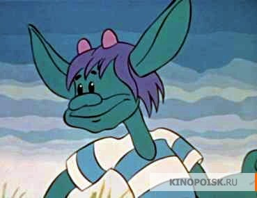
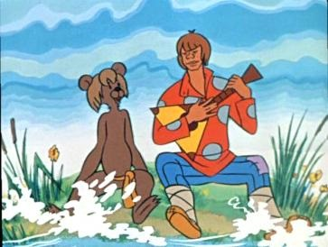

ил-был поп, Толоконный лоб.
Пошел поп по базару
Посмотреть кой-какого товару.
Навстречу ему Балда
Идет, сам не зная куда.
«Что, батька, так рано поднялся?
Чего ты взыскался?»
Поп ему в ответ: «Нужен мне работник:
Повар, конюх и плотник.
А где найти мне такого
Служителя не слишком дорогого?»
Балда говорит: «Буду служить тебе славно,
Усердно и очень исправно,
В год за три щелка тебе по лбу,
Есть же мне давай вареную полбу».
Призадумался поп,
Стал себе почесывать лоб.
Щелк щелку ведь розь.
Да понадеялся он на русский авось.
Поп говорит Балде: «Ладно.
Не будет нам обоим накладно.
Поживи-ка на моем подворье,
Окажи свое усердие и проворье».
Живет Балда в поповом доме,
Спит себе на соломе,
Ест за четверых,
Работает за семерых;
До́ светла всё у него пляшет,
Лошадь запряжет, полосу вспашет,
Печь затопит, всё заготовит, закупит,
Яичко испечет да сам и облупит.
Попадья Балдой не нахвалится,
Поповна о Балде лишь и печалится,
Попенок зовет его тятей;
Кашу заварит, нянчится с дитятей.
Только поп один Балду не любит,
Никогда его не приголубит,
О расплате думает частенько;

Время идет, и срок уж близенько.
Поп ни ест, ни пьет, ночи не спит:
Лоб у него заране трещит.
Вот он попадье признается:
«Так и так: что делать остается?»
Ум у бабы догадлив,
На всякие хитрости повадлив.
Попадья говорит: «Знаю средство,
Как удалить от нас такое бедство:
Закажи Балде службу, чтоб стало ему невмочь;
А требуй, чтоб он ее исполнил точь-в-точь.
Тем ты и лоб от расправы избавишь
И Балду-то без расплаты отправишь».
Стало на сердце попа веселее,
Начал он глядеть на Балду посмелее.
Вот он кричит: «Поди-ка сюда,
Верный мой работник Балда.
Слушай: платить обязались черти
Мне оброк по самой моей смерти;
Лучшего б не надобно дохода,
Да есть на них недоимки за три года.
Как наешься ты своей полбы,
Собери-ка с чертей оброк мне полный».
Балда, с попом понапрасну не споря,
Пошел, сел у берега моря;
Там он стал веревку крутить
Да конец ее в море мочить.
Вот из моря вылез старый Бес:
«Зачем ты, Балда, к нам залез?»
— Да вот веревкой хочу море мо́рщить,
Да вас, проклятое племя, корчить. —

Беса старого взяла тут унылость.
«Скажи, за что такая немилость?»
— Как за что? Вы не плотите оброка,
Не помните положеного срока;
Вот ужо будет вам потеха,
Вам, собакам, великая помеха. —
«Ба́лдушка, погоди ты морщить море,
Оброк сполна ты получишь вскоре.
Погоди, вышлю к тебе внука».
Балда мыслит: «Этого провести не штука!»
Вынырнул подосланный бесенок,
Замяукал он, как голодный котенок:
«Здравствуй, Балда мужичок;
Какой тебе надобен оброк?
Об оброке век мы не слыхали,
Не было чертям такой печали.
Ну, так и быть — возьми, да с уговору,
С общего нашего приговору —
Чтобы впредь не было никому горя:
Кто скорее из нас обежит около моря,
Тот и бери себе полный оброк,
Между тем там приготовят мешок».
Засмеялся Балда лукаво:
«Что ты это выдумал, право?
Где тебе тягаться со мною,
Со мною, с самим Балдою?
Экого послали супостата!
Подожди-ка моего меньшого брата».
Пошел Балда в ближний лесок,
Поймал двух зайков, да в мешок.
К морю опять он приходит,
У моря бесенка находит.
Держит Балда за уши одного зайку:
«Попляши-тка ты под нашу балалайку:
Ты, бесенок, еще молоденек,
Со мною тягаться слабенек;
Это было б лишь времени трата.
Обгони-ка сперва моего брата.
Раз, два, три! догоняй-ка».
Пустились бесенок и зайка:
Бесенок по берегу морскому,
А зайка в лесок до дому.
Вот, море кругом обежавши,
Высунув язык, мордку поднявши,
Прибежал бесенок, задыхаясь,
Весь мокрешенек, лапкой утираясь,
Мысля: дело с Балдою сладит.
Глядь — а Балда братца гладит,
Приговаривая: «Братец мой любимый,
Устал, бедняжка! отдохни, родимый».
Бесенок оторопел,
Хвостик поджал, совсем присмирел.
На братца поглядывает боком.
«Погоди, — говорит, — схожу за оброком».
Пошел к деду, говорит: «Беда!
Обогнал меня меньшой Балда!»
Старый Бес стал тут думать думу.
А Балда наделал такого шуму,
Что всё море смутилось
И волнами так и расходилось.
Вылез бесенок: «Полно, мужичок,
Вышлем тебе весь оброк —
Только слушай. Видишь ты палку эту?
Выбери себе любимую мету.
Кто далее палку бросит,
Тот пускай и оброк уносит.
Что ж? боишься вывихнуть ручки?
Чего ты ждешь?» — Да жду вон этой тучки;
Зашвырну туда твою палку,
Да и начну с вами, чертями, свалку».
Испугался бесенок да к деду,
Рассказывать про Балдову победу,
А Балда над морем опять шумит
Да чертям веревкой грозит.
Вылез опять бесенок: «Что ты хлопочешь?
Будет тебе оброк, коли захочешь...»
— Нет, говорит Балда, —
Теперь моя череда,
Условия сам назначу,
Задам тебе, враженок, задачу.
Посмотрим, какова у тебя сила.
Видишь, там сивая кобыла?
Кобылу подыми-тка ты,
Да неси ее полверсты;
Снесешь кобылу, оброк уж твой;
Не снесешь кобылы, ан будет он мой. —
Бедненькой бес
Под кобылу подлез,
Понатужился,
Понапружился,
Приподнял кобылу, два шага шагнул,
На третьем упал, ножки протянул.
А Балда ему: «Глупый ты бес,
Куда ж ты за нами полез?
И руками-то снести не смог,
А я, смотри, снесу промеж ног».
Сел Балда на кобылку верхом,
Да версту проскакал, так что пыль столбом.
Испугался бесенок и к деду
Пошел рассказывать про такую победу.
Делать нечего — черти собрали оброк
Да на Балду взвалили мешок.
Идет Балда, покрякивает,
А поп, завидя Балду, вскакивает,
За попадью прячется,
Со страху корячится.
Балда его тут отыскал, Отдал оброк, платы требовать стал.
Бедный поп
Подставил лоб:
С первого щелка
Прыгнул поп до потолка;
Со второго щелка
Лишился поп языка;
А с третьего щелка
Вышибло ум у старика.
А Балда приговаривал с укоризной:
«Не гонялся бы ты, поп, за дешевизной».
 ил-был поп,
ил-был поп,